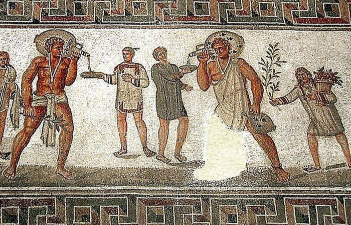
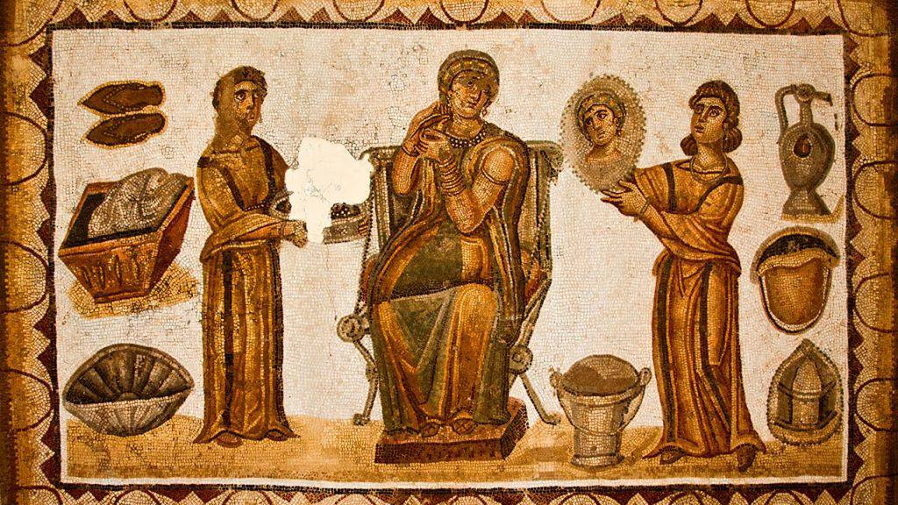

Римское право: институты и традиции
Введение в римское право
Понятие «римское право»
Римское право — один из величайших феноменов европейской цивилизации. Именно в нём сформировалось современное понимание права, его структура, принципы и многие институты, которые легли в основу правовых систем большинства стран романо-германской правовой семьи, включая Россию.
Термин «римское право» многоаспектен. В зависимости от контекста под ним понимают:
- Мировоззренческую систему — взгляды и убеждения римлян о мире, месте человека в нём и справедливости.
- Учебную дисциплину — обязательный курс в юридическом образовании, формирующий правовое мышление.
- Научное направление — область историко-правовых исследований.
- Правовую систему — реально действовавшее право Древнего Рима (с VIII в. до н.э. по VI в. н.э.), включая кодификацию императора Юстиниана (Corpus iuris civilis).
Современный подход акцентирует значение римского права как фундамента европейской правовой культуры. Римский подход фокусируется на оригинальных понятиях и практиках античности.
Римское понимание права (ius)
Римляне различали ius (право как объективную систему норм и институтов) и iustitia (справедливость). Право воспринималось не только как набор правил, но и как искусство добра и справедливости.
Классические определения римских юристов:
- Цельс: «Право есть наука о добром и справедливом» (ius est ars boni et aequi).
- Ульпиан: «Право — это наука о добром и справедливом».
- Папиниан: «Право — это то, что полезно всем или многим в каждом государстве».
- Модестин: «Все право введено соглашением, или установлено необходимостью, или закреплено обычаем».
- Гай: Правопорядок состоит из законов, плебисцитов, сенатусконсультов, конституций принцепсов, эдиктов магистратов и высказываний знатоков права.
Основные принципы римского права (которыми руководствовались юристы):
- Справедливость и добросовестность (bona fides).
- Польза отдельных лиц и общества.
- Равенство перед законом в рамках статусов.
- Разумность и естественность норм.
Деление права на публичное и частное
Одно из ключевых достижений римской юриспруденции — деление права на ius publicum (публичное право) и ius privatum (частное право). Это деление стало основой для всей последующей европейской правовой мысли.
По определению Ульпиана:
• Публичное право относится к положению Римского государства (ad statum rei Romanae spectat) — регулирует интересы всего общества, религию, организацию власти, магистратуры, святыни.
• Частное право относится к пользе отдельных лиц (ad singulorum utilitatem) — регулирует отношения между частными лицами.
Римское право преимущественно изучалось и развивалось именно как частное право (ius privatum). Оно регулировало:
- Личные права и статус субъектов.
- Брачно-семейные отношения.
- Право собственности и другие вещные права.
- Обязательства (из договоров, деликтов и др.).
- Наследование.
- Защиту частных прав.
Частное право делилось на ius civile (цивильное право — строго римское, для граждан), ius gentium (право народов — общее для римлян и иностранцев) и ius naturale (естественное право).
Периодизация римского права
В учебнике обычно выделяют три основных периода развития римского права:
- Древнейший (архаический) — от основания Рима (754/753 г. до н.э.) до III–II вв. до н.э. Характеризуется сакральностью, формализмом, Законами XII таблиц как первым письменным кодексом.
- Классический — расцвет римской юриспруденции (I в. до н.э. — III в. н.э.). Господство преторского права (ius honorarium), деятельность великих юристов (Гай, Папиниан, Ульпиан, Павел и др.), развитие гибких конструкций на основе добросовестности.
- Постклассический (включая юстиниановский) — IV–VI вв. н.э. Систематизация и кодификация права, упадок творческой юриспруденции, создание Corpus iuris civilis при императоре Юстиниане (529–534 гг.).
Рецепция римского права и его значение
Римское право пережило падение Западной Римской империи благодаря своей универсальности и абстрактности. Оно успешно регулировало любые частнособственнические отношения.
Рецепция (возрождение и восприятие) произошла в Средние века и Новое время, особенно в Европе XII–XIX вв. (глоссаторы, комментаторы, пандектная школа в Германии). Римское частное право стало основой Гражданских кодексов многих стран (в т.ч. влияло на российское дореволюционное и современное гражданское право).
Галерея по теме
Римский оратор/юрист выступает перед собранием (классическая сцена правовой риторики).
Страница манускрипта Corpus Iuris Civilis — величайшая кодификация римского права при Юстиниане.
Римский Форум в вечернем освещении — сердце римской правовой и общественной жизни.
Сенат или судебное собрание в Древнем Риме — символ публичного и частного права.
Учение о лицах (Субъекты римского права)
Основные понятия римского учения о лицах
В римском праве лицо (persona) — это субъект права, способный иметь права и обязанности. Римляне разработали одну из самых детальных систем правового статуса человека в истории. Учение о лицах лежит в основе всего частного права, поскольку именно от статуса лица зависела его правоспособность (caput habere — «иметь голову», то есть быть полноценным субъектом права).
- Persona — буквально «маска» (театральная), в праве — субъект права.
- Caput — правовое положение лица, его «правовая голова». Полная правоспособность требовала наличия всех трёх статусов.
- Правоспособность — способность иметь права и обязанности. Полная правоспособность включала три элемента:
- Status libertatis (состояние свободы)
- Status civitatis (состояние гражданства)
- Status familiae (состояние семейного положения)
- Умаление (capitis deminutio) одного из статусов приводило к потере или ограничению правоспособности.
- Дееспособность (способность самостоятельно осуществлять права и обязанности) зависела от возраста, пола, психического состояния и семейного положения.
Система статусов (три статуса лица)
Римские юристы выделяли три независимых статуса, комбинация которых определяла объём прав лица:
1. Status libertatis (состояние свободы)
- Свободные (liberi) — обладали полной свободой.
- Рабы (servi) — считались вещью (res), не имели правоспособности. Они могли владеть пекулием (peculium — имущество, выделенное господином для управления), но всё принадлежало хозяину.
- Основания возникновения рабства: плен на войне, рождение от рабыни, осуждение к тяжким работам, самопродажа в рабство (в архаический период).
- Правовое положение рабов постепенно смягчалось (запрет жестокого обращения, возможность отпуска на волю — манумиссия).
2. Status civitatis (состояние гражданства)
- Римские граждане (cives Romani) — обладали полными правами: commercium (право участвовать в гражданском обороте), conubium (право заключать законный римский брак), политические права.
- Латины (Latini) — промежуточное положение (латины старые, колониарные, юнианские).
- Перегрины (peregrini) — иностранцы, не имевшие римского гражданства. Их отношения регулировались ius gentium (правом народов).
- Вольноотпущенники (libertini) — бывшие рабы, получали ограниченное гражданство (с определёнными запретами, например, на брак с сенаторами).
3. Status familiae (состояние семейного положения)
- Personae sui iuris — лица своего права (независимые): pater familias (домовладыка) обладал полной властью над домочадцами.
- Personae alieni iuris — лица чужого права (подвластные): дети, жена (в браке cum manu), рабы, внуки и т.д. Они находились под властью (potestas) отца семейства.
- Власть отца семейства (patria potestas) была очень широкой, но с течением времени ограничивалась.
Особенности правового положения отдельных категорий лиц
- Несовершеннолетние:
- До 7 лет — полностью недееспособны.
- От 7 до 14 (мальчики) / 12 (девочки) — ограниченная дееспособность.
- После полового созревания — почти полная дееспособность, но до 25 лет могли нуждаться в попечительстве.
- Лица с дефектами воли или разума (безумные furiosi, слабоумные mente capti) — нуждались в опеке.
- Женщины — в архаический и классический периоды имели ограничения (находились под опекой — tutela mulierum), но постепенно правоспособность расширялась. В постклассический период многие ограничения были сняты.
Опека и попечительство (tutela и cura)
Важные институты защиты лиц с ограниченной дееспособностью:
- Опека (tutela) — над несовершеннолетними (impuberes) и женщинами. Опекун (tutor) управлял имуществом и давал согласие на сделки.
- Попечительство (cura) — над безумными, расточителями (prodigi) и лицами старше 25 лет в отдельных случаях.
Виды опеки: законная (legitima), завещательная (testamentaria), назначенная магистратом (Atiliana или dativa).
Опека и попечительство прекращались с достижением возраста, выздоровлением или другими основаниями.
Брачно-семейные правоотношения
- Брак (matrimonium) — союз мужчины и женщины с целью создания законной семьи.
- Виды брака: cum manu (жена переходила под власть мужа) и sine manu (жена сохраняла независимость).
- Условия действительности брака: согласие, достижение брачного возраста, conubium.
- Развод был относительно свободным.
Семья строилась вокруг pater familias, который обладал огромной властью над детьми, имуществом и домочадцами.
Галерея по теме
Внутренняя сцена римского дома с семьёй — быт и семейные отношения
Римская свадебная церемония — брак cum manu или sine manu.

Мозаика с рабами в Древнем Риме — иллюстрация status libertatis и положения рабов.
Учение о исках (Судопроизводство в римском праве)
Понятие и содержание исковой защиты
В римском праве иск (actio) был центральным институтом. Римляне говорили не «у меня есть право», а «у меня есть иск». Римское частное право часто называют системой исков: субъективное право существовало постольку, поскольку претор предоставлял средство его судебной защиты. Без иска право оставалось «голым» (nuda iura).
Иск — это право лица осуществлять в судебном порядке принадлежащее ему требование (определение Цельса и Ульпиана).
Исковая защита — основная форма реализации субъективных прав в Риме. Претор (судебный магистрат) ежегодно издавал эдикт (edictum), в котором публиковал формулы готовых исков. Это позволяло праву гибко развиваться без изменения законов.
Римский процесс был частным (стороны сами инициировали дело, суд не был государственным в современном смысле). Основные начала частного процесса:
- Состязательность сторон.
- Равенство процессуальных прав (с оговорками на статус).
- Устность и гласность (в классический период).
- Разделение процесса на две стадии (в легисакционном и формулярном процессах).
- Принцип bona fides (добросовестности) в оценке спора.
Виды римского частного процесса (историческая эволюция)
Римское судопроизводство прошло три основные формы:
- Легисакционный процесс (legis actiones) — древнейший (до II–I вв. до н.э.).
- Крайне формализованный, сакральный, связанный с Законами XII таблиц.
- Процесс проходил в два этапа: in iure (у претора) и in iudicio (у частного судьи).
- Виды легисакций: sacramento, iudicis arbitrive postulatio, condictio, manus iniectio, pignoris capio.
- Недостатки: строгая словесная формула, ошибка в словах вела к проигрышу дела.
- Формулярный процесс (per formulam) — классический период (с конца Республики).
- Самая совершенная форма. Претор выдавал формулу (formula) — письменную инструкцию судье.
- Структура формулы: Intentio (утверждение истца), Demonstratio (факты), Condemnatio (осуждение/оправдание), Exceptio (возражения), Fictio (фикция).
- Преимущества: гибкость, возможность учитывать добросовестность, быстрое развитие права.
- Экстраординарный (когниционный) процесс (cognitio extra ordinem) — постклассический период (с Principatus, окончательно в Доминат).
- Единая стадия, без разделения на in iure и in iudicio.
- Судебные функции перешли к императорским чиновникам (когниция).
- Появилась апелляция, письменность усилилась, процесс стал более бюрократическим.
- В юстиниановский период эта форма стала основной.
Классификация исков
Римские юристы разработали детальную классификацию исков:
- По личности ответчика:
- Вещные иски (actiones in rem) — направлены на признание абсолютного права на вещь (защищают право собственности, сервитуты и др.). Ответчиком может быть любое третье лицо.
- Личные иски (actiones in personam) — направлены против конкретного обязанного лица (из договоров, деликтов). Пример: иск о взыскании долга (condictio).
- По источнику происхождения:
- Цивильные (законные, actiones civiles).
- Преторские (эдиктальные, actiones honorariae).
- По цели и объёму:
- Восстановительные (actiones rei persecutoriae) — возвращение вещи или ценности.
- Штрафные (actiones poenales) — наказание нарушителя (взыскание штрафа сверх убытков).
- Смешанные.
- Другие виды:
- Иски с фикцией (actiones ficticiae).
- Иски по аналогии (actiones utiles).
- Популярные иски (actiones populares) — любой гражданин мог защищать общественный интерес.
- Прямые и обратные иски.
Особые (неисковые) средства преторской защиты
Претор мог защищать права без выдачи полноценного иска:
- Интердикты (interdicta) — категорические приказы претора (запретительные, восстановительные, предъявительные). Пример: uti possidetis (о владении).
- Реституция (restitutio in integrum) — восстановление в первоначальное положение (отмена сделки из-за обмана, принуждения, недееспособности). Срок обычно 1 год.
- Ввод во владение (missio in possessionem).
- Преторские стипуляции (принудительные обещания).
- Эксцепции (exceptiones) — возражения против иска, включавшиеся в формулу.
Исковая давность и другие особенности
- В классический период строгой исковой давности не было (кроме отдельных случаев). В постклассический период ввели общие сроки (обычно 30 лет для вещных исков).
- Коллизия исков и конкуренция средств защиты решалась претором.
- Не все лица могли свободно вчинять иски (рабы, подвластные дети в некоторых случаях).
Значение учения об исках
Римская система исков сделала право гибким и практичным. Формулярный процесс и преторское право позволили создать стройную систему защиты собственности, обязательств и других институтов, которая легла в основу современного гражданского процесса (особенно в странах романо-германской правовой семьи).
Сегодня принципы римского судопроизводства прослеживаются в понятиях иска, возражения (эксцепции), состязательности и судебного усмотрения.
Галерея по теме
Реконструкция римского судебного или публичного процесса.
Торжественная сцена на Форуме с толпой и храмом — атмосфера легисакционного или формулярного процесса.

Римский оратор выступает перед сенатом или судом — классическая сцена судебной риторики и состязательного процесса.
Римский магистрат (проконсул или претор) на трибунале принимает обращение — отличная реконструкция стадии in iure перед магистратом.

Древняя мозаика с официальным лицом и слугами — бытовая иллюстрация римской судебно-административной жизни.
Вернуться к оглавлению ↑